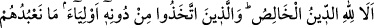
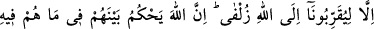
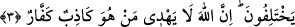

3. Dikkat et, hâlis din yalnız Allah’ındır. O’nu bırakıp kendilerine bir takım
dostlar edinenler: Onlara, bizi sadece Allah’a yaklaştırsınlar diye kulluk ediyoruz,
derler. Doğrusu Allah, ayrılığa düştükleri şeylerde aralarında hüküm verecektir.
Şüphesiz Allah, yalancı ve inkârcı kimseyi doğru yola iletmez.
“Dikkat et,” iyi bil ki, şirkten arınmış “hâlis din yalnız Allah’ındır.” O’nun hakkından
ve O’na karşı vecîbelerdendir. Yâni, dikkat edin ki O tâatin kendisine tahsis edilmesi
zorunlu olandır. Yâni; O, kendisine yapılan hâlis tâate lâyık olandır. Çünkü ülûhiyyet
sıfatlarına tek başına sâhip olan, gayblara ve sırlara vâkıf olan, verdiği nimetlerden
fayda sağlamaktan berî olan yegâne varlık O’dur.
el-Kevâşî’de der ki: “İyi bil ki, hevâ, şüphe ve şirkten arınmış hâlis din yalnız Allah’a
âiddir. O’nun herhangi bir ibâdette ihlâsa ihtiyacı olduğundan değil, rahmeti sâyesinde
böyle bir din ile O’na yaklaşılabilir.”
et-Te’vîlâtü’n-Necmiyye’de der ki: “Hâlis din, tamamı Allah’a âid olan dindir, kulun
onda bir payı yoktur. Muhlis/ihlâslı kimse ise kendi gayretiyle değil, Allah’ın cömertliği
ile varlık hapsinden kurtardığı kimsedir.”
Hasan (Basrî)’den rivâyet edildiğine göre hâlis din İslam’dır. Çünkü onun dışındaki
dinler şirkten arınmış/hâlis değildirler. Dolayısıyla Allah’ın emrettiği din değildirler.
Çünkü Allah Teâlâ ancak İslam dinini kabul eder.
Ebû Hüreyre (r.a.)’tan rivâyet edildiğine göre bir adam: “Yâ Rasûlallah! Ben bir şey
tasadduk ediyor ve bir şey yapıyorum, onunla hem Allah’ın rızâsını hem de insanların
övgüsünü istiyorum (bu davranış hakkında ne dersiniz)?” diye sordu. Hz. Peygamber
(a.s.) cevaben: “Muhammed’in canı kudret elinde olana yemin ederim ki, Allah
kendisine ortak olunan hiçbir şeyi kabul etmez!” buyurdu, ardından “Dikkat et, hâlis
din yalnız Allah’ındır.” âyetini okudu.[56]
Hz. Peygamber şöyle buyurmuştur: “Noksanlardan münezzeh olan Allah şöyle
buyurdu: Kim başkasını da bana ortak yaparak benim için bir amel işlerse, bu amelin
tamamı kendisinindir; ben ondan uzağım. Çünkü ben ortak koşulmaktan müstağnî
olanların en müstağnî olanıyım!”[57]
Bir başka hadiste de şöyle buyurmuştur: “Allah, içinde zerre kadar riyâ bulunan bir
ameli kabul etmez!”[58]
Ey oğul, Amr’dan ücret umma
Çünkü sen Zeyd’in evinde çalışmaktasın